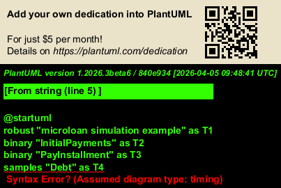

@startuml
robust "microloan simulation example" as T1
binary "InitialPayments" as T2
binary "PayInstallment" as T3
samples "Debt" as T4
binary "Done" as T5
scale 10 as 166 pixels
@0.0002178
T1 is idle
@0.2673008
T1 is Setup
@0.2690767
T2 is high
@1.0334542
T2 is low
@1.0387143
T1@1.0387143 <-> @11.0387143 : PT10S
@11.0787686
T3 is high
@11.1086172
T4 is 52.5
@11.4016389
T4 is 42.5
@11.4155199
T3 is low
@11.5049542
T1 is Paying
@11.5059009
T1@11.5059009 <-> @21.5059009 : PT10S
@21.5059009
T1@21.5059009 <-> @31.5059009 : PT10S
@21.5114983
T3 is high
@21.5121452
T4 is 44.62
@21.7184437
T4 is 34.62
@21.7296589
T3 is low
@31.5059009
T1@31.5059009 <-> @41.5059009 : PT10S
@31.5167131
T3 is high
@31.5177087
T4 is 36.35
@31.7542972
T4 is 26.35
@31.7645250
T3 is low
@41.5059009
T1@41.5059009 <-> @51.5059009 : PT10S
@41.5181614
T3 is high
@41.5190926
T4 is 27.67
@41.7354661
T4 is 17.67
@41.7460515
T3 is low
@51.5059009
T1@51.5059009 <-> @61.5059009 : PT10S
@51.5218355
T3 is high
@51.5228925
T4 is 18.55
@51.7140272
T4 is 8.55
@51.7268924
T3 is low
@61.5059009
T1@61.5059009 <-> @71.5059009 : PT10S
@61.5176236
T3 is high
@61.5186820
T4 is 8.98
@61.7070365
T4 is 0
@61.7165037
T3 is low
@61.7200128
T1 is Paid
@61.7200177
T5 is high
@61.7300095
T1 is {hidden}
@61.7344256
T1 is {hidden}
@61.7345512
T5 is low
T1@0 <-> @62 : 61,734 s
@enduml